문화와 지식의 힘으로 새로운 시대를 열고, 독자와 함께 성장하며 한국 출판의 뿌리를 단단히 다져온 출판사입니다.
광복의 첫 날부터 오늘에 이르기까지, 을유문화사는 책과 함께 한국 현대사의 길을 걸어왔습니다.
전통을 존중하며 새로움을 창조하는 법고창신의 정신으로, 한국 출판의 기틀을 세우고 지적 문화의 장을 넓혀왔습니다.
책 읽는 즐거움, 을유문화사와 함께하세요
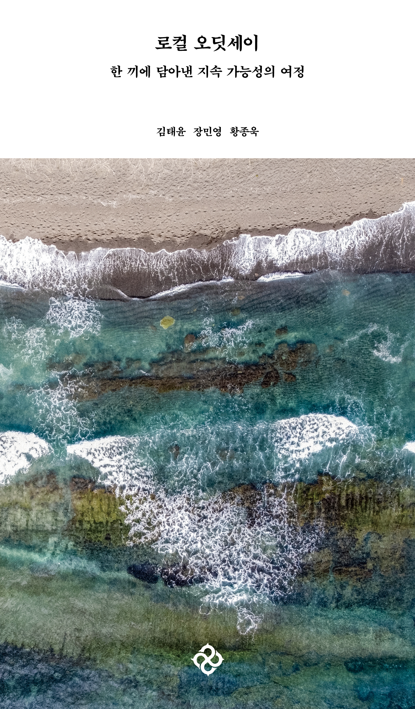
김태윤, 장민영, 황종욱
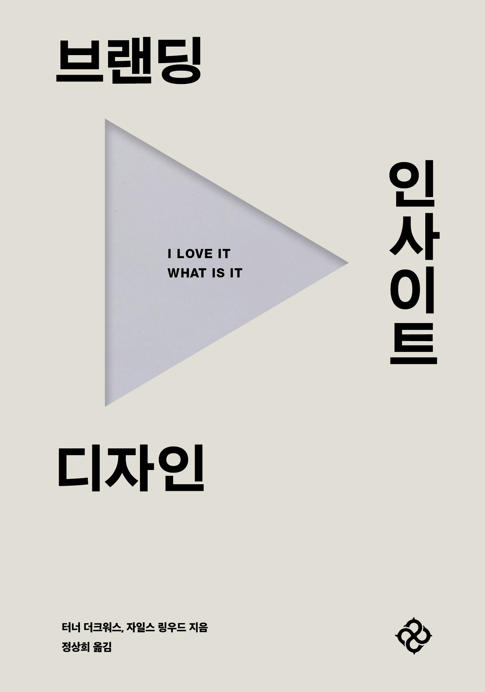
터너 더크워스, 자일스 링우드 , 정상희
이영은
리처드 도킨스 , 이한음
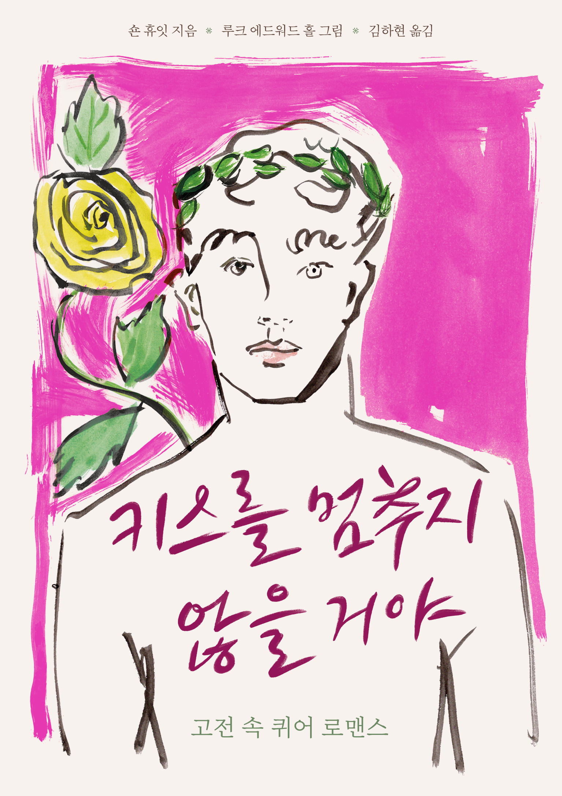
숀 휴잇, 루크 에드워드 홀 , 김하현
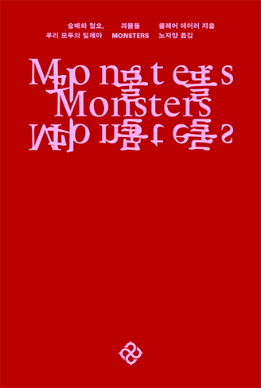
클레어 데더러 , 노지양
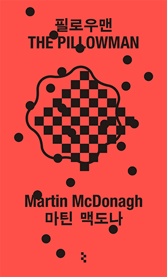
마틴 맥도나 , 서민아
박찬욱
라이너 마리아 릴케, 발튀스 , 윤석헌
작가의 시선으로 세상을 읽는 순간
“파스칼 키냐르의 수사학, 사랑바다”를 번역한 프랑스어 번역가
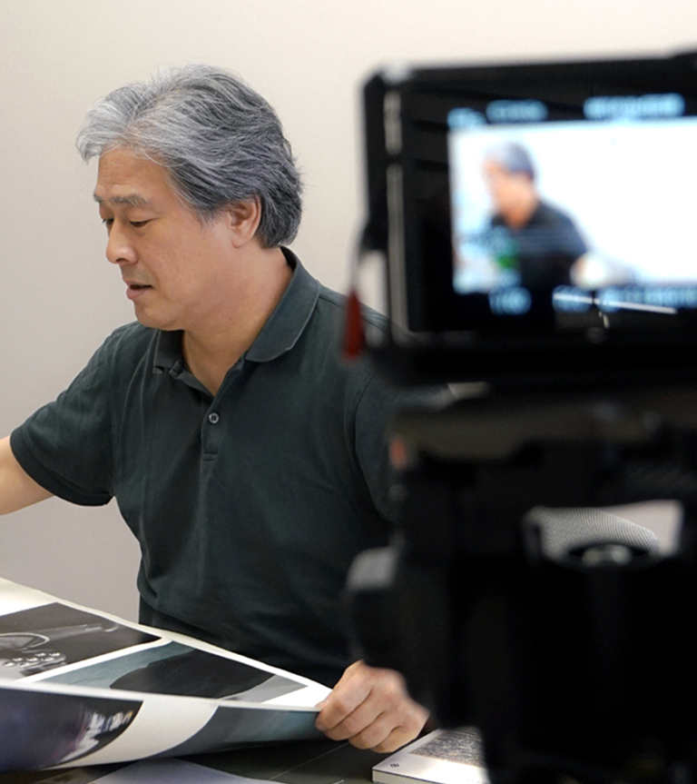
“어떻게 헤어질 결심을, 전,란” 등 작가 및 영화감독
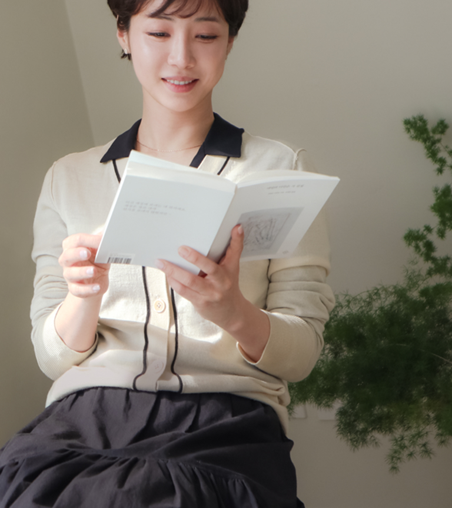
폐품으로 예술을 만드는 업사이클링과 회화작업을 하는 작가
책을 통해 발견한 사유와 감각, 을유의 일상 기록
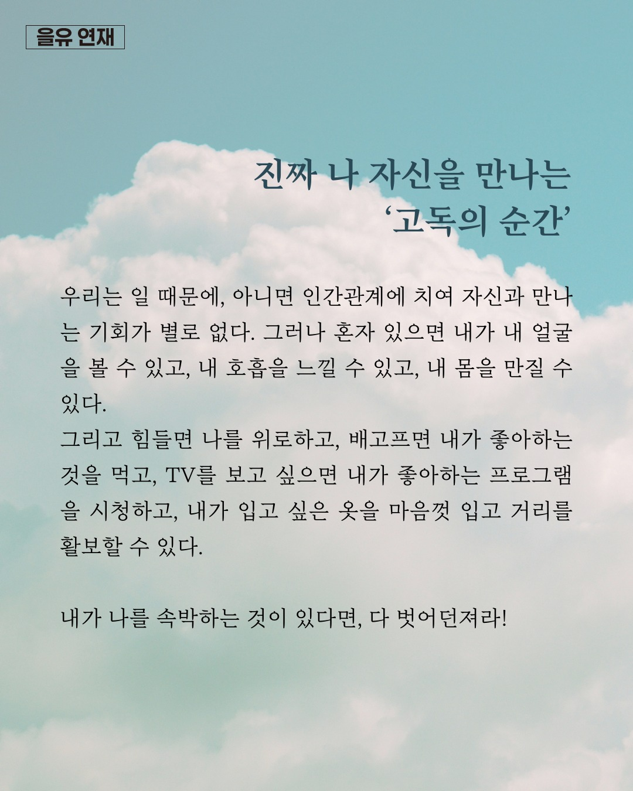
#을유연재 #나를돌보는철학 #문성훈하지만 고독의 순간 나는 진짜 나 자신을 만나고, 그 누구도 아닌 나 자신으로 존재한다. 그리고 고독의 순간, 모든 것의 가치를 내가 정하는 자유로운 삶의 주인이 된다. 나는 어느덧 고독을 즐기고 있다.
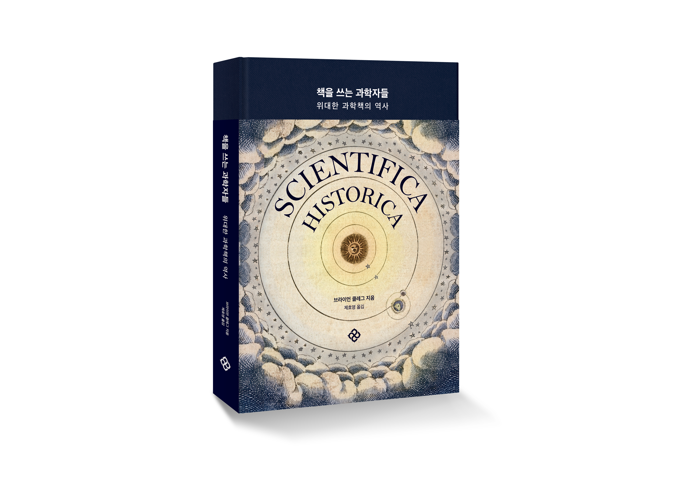
“과학혁명의 구조”가 학계에 큰 영향을 주었다면, 같은 해에 출간된 또 다른 책은 전 세계에 더욱 막대한 영향력을 떨치고 대중에게 비교적 생소한 과학적 탐구 주제였던 환경주의를 소개했다. 공공 정책을 변화시키고 사람들의 전반저인 인식 수준도 높인 이 책이 수백만 명의 죽음에 간접적인 책임이 있다고 주장
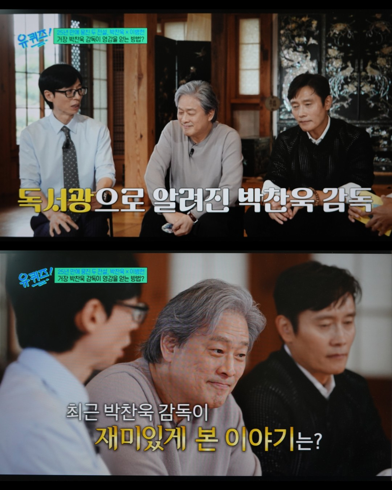
#어쩔수가없다 #박찬욱 #추천도서 24일 방송 tvN <유퀴즈> 보셨나요? 이날 방송에서 영화 <어쩔수가없다>의 박찬욱 감독과 이병헌 배우가 함께 출연했는데요. 독서광 박찬욱 감독이 ✨최근 재미있게 본 책✨ "예술가나 체육인의 마지막 순간들을 음미하며 그들이 어떻게 성숙해가는지를 다루는 책"
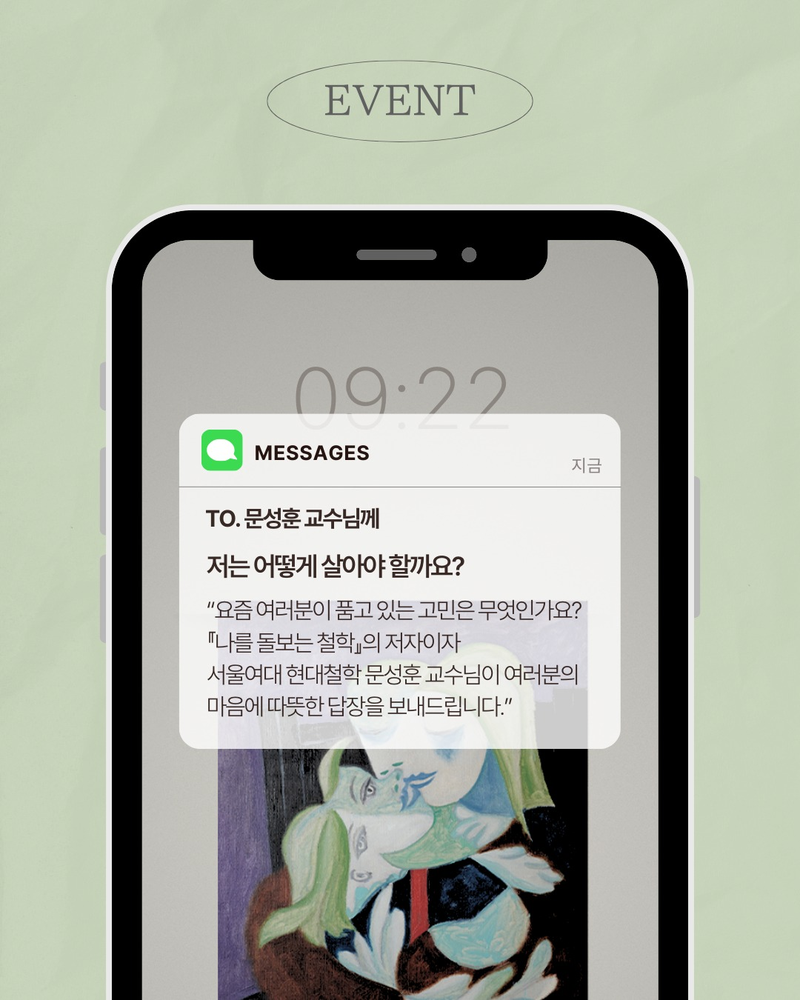
"어떻게 살아야 할까요?" 요즘 여러분이 품고 있는 고민은 무엇인가요? 『나를 돌보는 철학』의 저자이자 서울여대 현대철학 문성훈 교수님이 여러분의 마음에 따뜻한 답장을 보내드립니다. - 기간 : 9/23(화)~9/29(월) - 응모 : https://naver.me/xVGdrzTo - 당첨 : 5명 (선정된 사연은 콘텐츠로 제작될 수 있습니다)
1979년 제정 이후 국내 건축계 최고 권위를 자랑하는 한국건축가협회상의 올해 수상작이 베일을 벗었다. (...) 2009년 젊은건축가상 이후 스타 건축가로 자리매김한 유현준 교수는 ‘오아르 미술관(유현준앤파트너스건축사사무소)’으로 본상에 올랐다. 경주 노서동 고분군 일대에 들어선 오아르 미술관은 신라 고도의 역사적 맥락 위에 현대적 건축미를 더해 눈길을 끌었다. 🏆‘제48회 한국건축가협회상’ 수상🏆
20세기의 가장 초반에 나온 물리학 도서들 가운데 일부는 역사상 가장 유명한 두 과학자의 손에서 나왔다. 바로 알베르트 아인슈타인과 마리퀴리다. 1867년에 폴란드 바르샤바에서 태어난 마리퀴리의 본명은 마리아 스크워도프스카다. 여성이 과학연구로 노벨상을 받은 사례도 드물지만, 1903년 노벨 물리학상에 이어 1911년에 노벨 화학상까지 노벨상을 두번이나 받은 사람은 더더욱 드물다